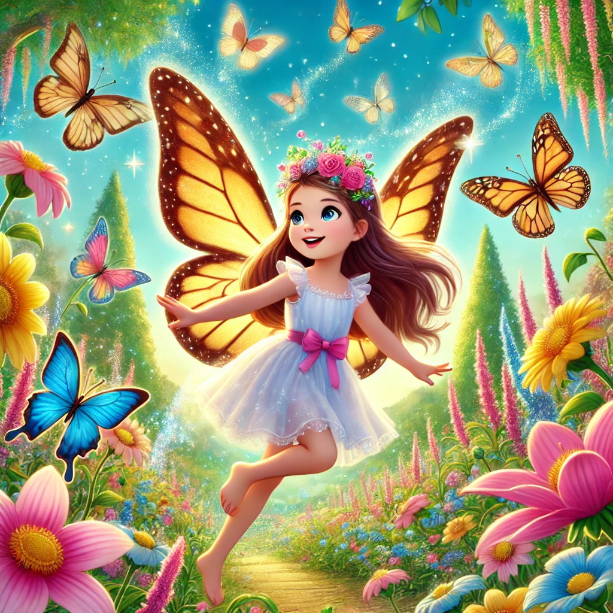

Un Vuelo Mágico

Había una vez una niña llamada Sofía que vivía en un pequeño pueblo rodeado de flores y árboles. Sofía era una niña muy especial porque tenía una gran fascinación por las mariposas. Cada vez que veía una mariposa revoloteando por el jardín, soñaba con poder jugar y volar junto a ellas.
Un día, mientras Sofía paseaba por el campo, encontró una mariposa con alas doradas que brillaban bajo el sol. La mariposa, llamada Aurora, parecía diferente de todas las demás. Sofía la siguió hasta un claro en el bosque, donde había un hermoso jardín lleno de mariposas de todos los colores.
Aurora, al darse cuenta del deseo de Sofía de jugar con las mariposas, se posó suavemente en su hombro y le susurró: "Sofía, sé cuánto amas a las mariposas. Si quieres, te puedo llevar al Reino de las Mariposas, donde podrás jugar y volar con nosotras todo el tiempo que desees."
Sofía, emocionada, aceptó la invitación de Aurora. La mariposa agitó sus alas y, en un abrir y cerrar de ojos, Sofía se encontró en un mundo mágico. En el Reino de las Mariposas, el cielo estaba lleno de mariposas de colores brillantes, y las flores eran tan altas como árboles.
Aurora le dio a Sofía un par de alas mágicas que se ajustaron perfectamente a su espalda. Con estas alas, Sofía podía volar y danzar en el aire junto a sus nuevas amigas mariposas. Pasaron el día explorando jardines, volando sobre ríos cristalinos y jugando a esconderse entre las flores.
Mientras volaban, las mariposas le contaron a Sofía historias sobre su reino y le mostraron los lugares más bellos y escondidos. Sofía se sentía feliz y libre, disfrutando de cada momento en este mundo maravilloso.
Al caer la tarde, Aurora le dijo a Sofía que era hora de regresar a casa. Aunque estaba triste por tener que irse, Sofía sabía que siempre llevaría consigo los recuerdos de ese día mágico. Aurora prometió que Sofía siempre sería bienvenida en el Reino de las Mariposas, y que solo tenía que cerrar los ojos y desearlo con todo su corazón para regresar.
De vuelta en su pueblo, Sofía continuó amando y cuidando las mariposas, sabiendo que en cualquier momento podría volver a volar y jugar con sus amigas en ese reino mágico. Y así, Sofía vivió feliz, con un corazón lleno de sueños y la certeza de que la magia siempre está cerca de quienes creen en ella.
Y colorín colorado, este cuento se ha acabado. Buenas noches, Alondra. ¡Dulces sueños!